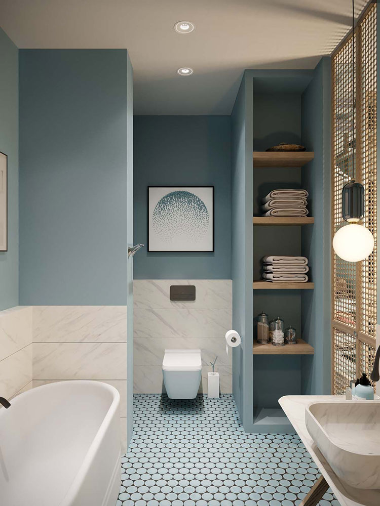

Дизайн спальни 2021 | Модные Тренды в Интерьере [+65 фото]
- Интерьер для Симс 4. Скачать моды
Интерьер ванной 2020. В будущем году будет в тренде интерьер ванной 2020 отделанный мрамором. Разнообразие сортов этого роскошного природного камня дает огромный простор для фантазии. - Интерьер 2021: Актуальные Цвета, Трендовые Стили и Идеи ...
Ежедневно обновляемый информационный интернет-ресурс, посвящённый актуальным тенденциям в дизайне, архитектуре и арте - INMYROOM – Все о дизайне интерьера, свежие идеи и фото ...
Интерьер 2021 будет иметь несколько существенных отличий от оформления, актуального в предыдущие сезоны. О них рассказывает наш интернет-журнал. - Дизайн спальни 2021 | Модные Тренды в Интерьере [+65 фото]
Модный интерьер спальни 2021 (фото) Безусловно, дизайн спальни 2021 года можно выбрать любой, даже тот, который сочетает в себе сразу несколько стилей интерьера, но все равно что-то будет выделяться из общего фона, будет ... - Интерьер | AD Magazine
Но само по себе наличие индивидуальной зоны для готовки и приема пищи — уже немало, а чтобы находиться в такой кухне было приятно, требуется всего лишь правильно оформить интерьер. - Фотогалерея интерьеров. Примеры готовых дизайн проектов ...
Интерьер с историей — интерьер, наполненный жизнью», — уверена украинский дизайнер Ольга Фрадина из Olga Fradina Interi... - Фотографии красивых интерьеров
Интерьер и дизайн интерьера. Красивые интерьеры, идеи оформления интерьеров. Красивые дома и квартиры лучших дизайнеров. Дизайн и декор красивых интерьеров в фотографиях. Интерьерное вдохновение. - Дизайн маленькой кухни - 75 фото интерьеров, идеи для ремонта
Интерьер спальной комнаты оформляется в светлых тонах, в качестве контрастных акцентов часто используют торшеры с темным абажуром. Не исключено размещение колонн и статуй. - 500+ лучших изображений доски «Дизайн интерьера» в 2020 г ...
Дизайн-проекты для Вашего дома: интерьер ванной, кухни, гостиной и не только. Выберите материалы для ремонта и узнайте адреса ближайших к Вам магазинов, а также действующие там акции. - Твой интерьер | портал готовых интерьеров для Вашего дома ...
Интерьер 12 Ноября 2020 Минимализм и историческая архитектура: ресторан Papi в Париже Рестораны 12 Ноября 2020

Мой дом Строительство Дом Баня Гараж Беседки Терраса и веранда Туалет Фундамент Стены Крыша Забор Ремонт Внешняя отделка Внутренняя отделка Пол, потолок Окна и двери Лестница Материалы Оборудование и инструменты Дизайн Квартира Загородный дом Коммуникации Канализация Водоснабжение и отопление Вентиляция Трубы и их сварка Электропроводка Садовый домик, дача Домик и постройки Сад и огород Цветы и растения Хозяйственные постройки Планировка земельного участка Дизайн земельного участка Газон Декор Поделки Камин Лестницы Мебель Освещение Потолки и стены Интерьер Стили интерьера Цвета в интерьере Прихожая Гостиная Спальня Детская Кухня Ванная Балкон и лоджия
Строительство | Дизайн | Ремонт | частных домов & квартир
Наш проект Реклама Контакты Вы здесь : Мой дом / Интерьер / Спальня / Дизайн спальни 2021 – модные тенденции, тренды, современный подход в организации уютного пространства (фото)Дизайн спальни 2021 – модные тенденции, тренды, современный подход в организации уютного пространства (фото)
7 октября 2020 Автор:domnomore.com Комментариев нетСпальная комната занимает важнейшее место во всей квартире и создает атмосферу полного релакса. В ней всегда должно быть комфортно, тепло и по-домашнему уютно, а засыпать человек должен практически мгновенно. Бытует мнение, что модный дизайн спальни 2021 (фото представлены в статье) должен совпадать с образом и стилем жизни владельца, а также с его деятельностью, так как все это непременно оставляет отпечаток как на отдельно взятых комнатах, так и всей квартиры в целом. Проверим на практических примерах, так ли это на самом деле. Узнаем какие тенденции в дизайне интерьера спальни актуальны в этом году.
Модный интерьер спальни 2021 (фото)
Безусловно, дизайн спальни 2021 года можно выбрать любой, даже тот, который сочетает в себе сразу несколько стилей интерьера , но все равно что-то будет выделяться из общего фона, будет более характерен для какого-то определенного направления.
Ключевую роль в оформлении любого помещения играет цветовая палитра, поскольку доказано непосредственное влияние цвета на психологическое и эмоциональное настроение человека. Поэтому цветовая гамма должна приносить радость и удовольствие, а не угнетать.
Роскошная спальня в темных и розовых тонах
Современная спальня 2021 – это место где царит функциональность, ведь даже самое небольшое количество мебели и элементов декора должно быть полезным, создавать комфорт и позитивные эмоции от пребывания в ней.
Стильная спальня в стиле арт-деко
Безупречность вкуса в каждой детали
Спальня 2021: идеи, фото, тенденции
Сегодня классический дизайн спальни 2021 представляет собой сочетание нескольких направлений в интерьере, например греческий стиль, ренессанс, барокко и так далее.
Главными элементами такого дизайна является резьба по дереву, предметы антиквариата, бархат, натуральные породы деревьев, шелк, кружевные мотивы , вещи из хрусталя и драпировка. Также в интерьере спальни 2021 присутствует добавление позолоченных элементов, которые могут быть выполнены как краской, имитирующей золото, так и настоящим сусальным золотом. Тут уже все будет зависеть от тугости кошелька самого человека.
Модная спальня в современном стиле с красивым деревянным потолком
Объемный дизайнерский декор стен – тренды модных спальных интерьеров
Спать или отдыхать в такой спальне огромное удовольствие
Данное фото станет хорошим подспорьем для того, чтобы создать стильный и модный интерьер спальни 2021
Что касается сочетания цветов в интерьере , то тут все максимально спокойно. Интерьер спальни 2021 – это в первую очередь сдержанность, где все выполнено в натуральных природных оттенках. Кричащих цветов ни в коем случае быть не должно.
Осветительные приборы должны быть тоже классического стиля, с различными завитками, блестящим металлом, что придаст интерьеру богатства и роскоши.
Гламурная спальня в черном цвете для истинных поклонников современной классики
Пример удачного сочетания ярких оттенков в темном интерьере
Интересный вариант оформления и выделения зоны кровати
Модная спальня 2021 с современным дизайном подойдет людям, которые уже состоялись в жизни и теперь мечтают о стабильности, надежности. Современные стилевые направления с лихвой обеспечивает данный потребности.
Теплые оттенки способствуют созданию легкой умиротворяющей атмосферы
Красивые спальни в розовом цвете – тренд этого года
Яркий колорит спальни с нотками французского быта
Спальня 2021 в стиле хай-тек
Данный вид оформления спальни 2021 – под стать молодым и современным людям, которые всегда в курсе последних новинок в области технологии и техники, а также гаджетов и которым безумно хочется создать спальню максимально приближенную к своим интересам.
Интересный дизайн потолка в белоснежной спальне хай-тек
Главным отличием этого стиля считается наличие огромного количества свободного пространства, в котором отсутствуют все лишние и ненужные вещи, которые его уменьшают.
Хай-тек включает в себя лакированные, хромированные поверхности, прямые и лаконичные линии с минимальным набором элементов декора.
Белый цвет стен помогает визуально увеличить пространство комнаты
Основными цветами в стиле хай-тек являются черный и белый, а также серый, который сосредотачивает все внимание на себе. Все эти детали должны быть функциональны, нести не только пользу, но и создавать максимальный уют и комфорт.
Кровать которая словно парит в воздухе смотрится стильно и необычно
Спальня 2021 в стиле минимализм
Этот стиль в чем-то похож на хай-тек, но все же свои определенные черты у него все же есть, такие, как сдержанность в формах, линиях и цвете, а также лаконичность и точность. Причем это касается абсолютно всех деталей интерьера: большие, просторные окна, натуральные, природные материалы для отделки, светлая палитра цвета.
Данный стиль отображает отношение человека к жизни в целом, а не просто к интерьеру. Это своего рода философия, в которой главное не количество предметов быта, а их качество, практичность, функциональность и красивая, стильная и современная расстановка.
Благодаря этому стилю, возникает ощущение, что в комнате очень много свободного пространства, а также присутствует какое-то легкое, воздушное ощущение.Утонченная спальня в стиле минимализм в нейтральной цветовой гамме
Стиль минимализм прекрасен во всех его проявлениях
Вариант дизайна белоснежной спальни в классичиском направлении минимализма
Если говорить о цвете, то здесь есть одно негласное правило: ни в коем случае нельзя использовать более трех цветов в одном помещении. Идеальным считается применение белого, серого и пастельных цветов.
Скрытая светодиодная подсветка в спальне отлично сочетается со стилем минимализм
Идеальная спальня с роскошной кроватью где нет ничего лишнего
Просторная спальня в стиле минимализм
Базовые цвета оформления спален в стили минимализм – белый, черный, серый
Особую роль в стиле минимализм играет свет. Его должно быть очень много, однако сами осветительные приборы должны быть небольшими.
Как вариант можно использовать точечное освещение, которое не будет выбиваться из общего фона комнаты. Эта спальня для очень занятых и современных людей.
Поклонники минималистичной стилистики по достоинству оценят подобный вариант оформления спальни 2021
Интересные примеры оформления спальни 2021
Просто, но со вкусом. Пастельные тона всегда на пике моде
Спальня 2021 в стиле лофт
Пожалуй, для спальни это самый оригинальный и необычный дизайн спальни 2021 года , который отлично подойдет творческим натурам, ярким личностям, жаждущим разнообразия пространства и нестандартных решений в интерьере своей спальни.
Интерьер спальни в стиле лофт где каждый цвет идеально подобран друг к другу
Лофт дизайн в этом году завоевывает все больше поклонников
Смелое, но оправданное решение оформления деревянными брусками изголовья кровати
Кирпична кладка и голый бетон прекрасно подойдет людям предпочитающим безупречность стиля лофт
Отличным дополнение модному интерьеру спальни 2021 станут яркие покрывала, подушки и шторы, мебель также должна быть яркой и стильной.
Многие согласятся, что кирпичные стены без отделки в сочетании с уютной, комфортабельной мебелью и современного декорирования создают какой-то необъяснимый эффект, тем самым привлекая всеобщее внимание и интерес.
Центральная часть этой спальни в стиле лофт – выбеленный деревянный потолок с выступающими балками
Декора в стиле лофт не должно быть много, торшера и нескольких картин на стене вполне достаточно
В стиле лофт допускается присутствие как теплых, так и холодных оттенков
Спальня 2021 в стиле лофт – допускает расстановку мебели и прочих аксессуаров в разных стилях, это позволяет сделать помещение утонченным и мягким, либо наоборот достаточно агрессивным и дерзким.
Красивая спальня идеально выдержанная в эстетике лофта
Надеемся, что полезные советы, свежие идеи, фото помогут вам оформить красивый интерьер спальни 2021, оживить пространство, организовать комфортное место для сна.
Дизайн интерьера 2021 (фото): новые решения, вдохновляющие идеи, модные тенденции
Предыдущая публикацияКрасивые обои 2021 – модные, стильные, современные новинки этого года (коллекции, фото)
Оставить свой комментарийОставить ответ Отменить ответ
Популярное сегодня
Лестница на второй этаж в частном доме, выбираем подходящий проект 127 091
Популярное вчера
Как построить дачный домик своими руками: планы и проекты готовых домов 53 659
Как красиво украсить интерьер с помощью домашнего рукоделия (фото, пошаговый мастер-класс)
Свежие записи
Чем утеплить стены частного дома изнутри и как это сделать своими руками правильно – пошаговая инструкция Как правильно шпаклевать стены – пошаговая инструкция, видео, советы, рекомендации Какой утеплитель лучше минеральная вата или пенопласт: отличия, область применения Красивый дизайн ванной комнаты 2021 – фото, актуальные идеи, модные тенденции этого года Дизайн интерьера 2021 (фото): новые решения, вдохновляющие идеи, модные тенденции
Выбор наших читателей
Пристроенные террасы и веранды к дому — лучший способ увеличить пространство
Красивый дизайн ванной комнаты: актуальные идеи и модные тенденции этого года
Строительство каркасных домов по канадской технологии под ключ: проекты, отзывы
Как создать идеальный интерьер в спальне: советы опытных дизайнеров
Лучшее средство от того, как навсегда избавиться от муравьев на даче и огороде
Поделки из шишек своими руками: мастер-класс создания оригинальных изделий
Красивый дизайн маленькой кухни – идеи по обустройству небольшого пространства
Изготовление поделок из пластиковых бутылок своими руками — пошаговая инструкция
Оригинальные идеи для дачи и сада своими руками: пошаговый мастер-класс (+фото)
Гостиная с камином: 77 креативных идей которые украсят камин в интерьере
Садовая мебель для дачи изготовленная своими руками — фото удачных самоделок
Детские площадки для дачи — как своими руками создать безопасный уголок для детей
Как сделать клумбу или цветник на даче своими руками из подручных материалов
Стиль хай тек в интерьере квартиры и дома — кухня, ванна, гостиная и спальня (фото)
Бетон своими руками как правильно рассчитать пропорции для его изготовления
Оформление детской комнаты — как создать уют для вашего малыша
Красивые садовые беседки своими руками (фото)
Как сделать пол на балконе своими руками — пошаговое руководство для начинающих мастеров
Сочетание цветов в интерьере или как создать лучший дизайн
Мы в социальных сетях
543 Facebook 1 896 Pinterest 654 Twitter 1 149 YouTube 789 Instagram 2 346 VkontakteСвежая запись
Интересные поделки из бумаги сделанные своими руками: идеи, фото, пошаговый мастер-класс ★★★★★ 836 Красивый забор для частного дома и дачи: интересные идеи, современные решения, стильное фото ★★★★★ 290 Современный дизайн Современные решения, вдохновляющие идеи, модные тенденции 2021 года 7551 Детская для девочки Вдохновляющие идеи для организации комфортного и уютного пространства 8245 Обои для стен Красивые обои – модные, стильные, современные новинки 2021 года 2388 Маленькая кухня Дизайн маленькой кухни — стильные идеи по обустройству небольшого пространства 6211 Строительство Дом Фундамент Стены Окна и двери Пол и потолок Крыша Баня Беседки Гараж Туалет Забор Лестница Коммуникации Канализация Водоснобжение и отопление Вентиляция Трубы и их сварка Электропроводка Ремонт Внешняя отделка Внутренняя отделка Материалы Оборудование и инструменты Садовый домик, дача Домик и постройки Сад и огород Хозяйственные постройки Планировка земельного участка Газон Дизайн земельного участка Декор Поделки Камин Лестницы Мебель Освещение Потолки и стены Интерьер Стили интерьера Цвета в интерьере Ванная Детская Прихожая Гостиная Кухня Спальня Терраса и лоджия Дизайн Квартира Загородный дом Строительство Дом Баня Гараж Беседки Терраса и веранда Туалет Фундамент Стены Крыша Пол, потолок Окна и двери Забор Ремонт Внешняя отделка Внутренняя отделка Лестница Материалы Оборудование и инструменты Дизайн Квартира Загородный дом Коммуникации Канализация Водоснабжение и отопление Вентиляция Трубы и их сварка Электропроводка Садовый домик, дача Домик и постройки Сад и огород Цветы и растения Хозяйственные постройки Планировка земельного участка Дизайн земельного участка Газон Декор Поделки Камин Лестницы Мебель Освещение Потолки и стены Интерьер Стили интерьера Цвета в интерьере Прихожая Гостиная Спальня Детская Кухня Ванная Балкон и лоджия Связь с нами © 2015-2020 Cтроительный порталЭл. почта: support@domnomore.com
Отд. рекламы: advert@domnomore.com Контакты Карта сайта Рекламодателям Обратная связь Безопасность Политика Cookie Тексты
Copyright © 2015-2020 Все права на представленные материалы принадлежат Domnomore.com. Копирование текста без активной обратной ссылки на сайт запрещено.
Информация Для персонализации контента, анализа трафика и рекламы, а также повышения качества и улучшения работы нашего сайта, на нем используются файлы «cookie» . Оставаясь на нашем сайте, вы даете свое согласие на их дальнейшее использование. Подробнее ознакомится с информацией вы можете в разделе «Политика конфиденциальности» . © 2015-2020 Domnomore - авторская лицензия сайта: № АР 417-11-785 LLC ® | Данный сайт внесен в реестр объектов интеллектуальной собственности и охраняется законом ГК РФ